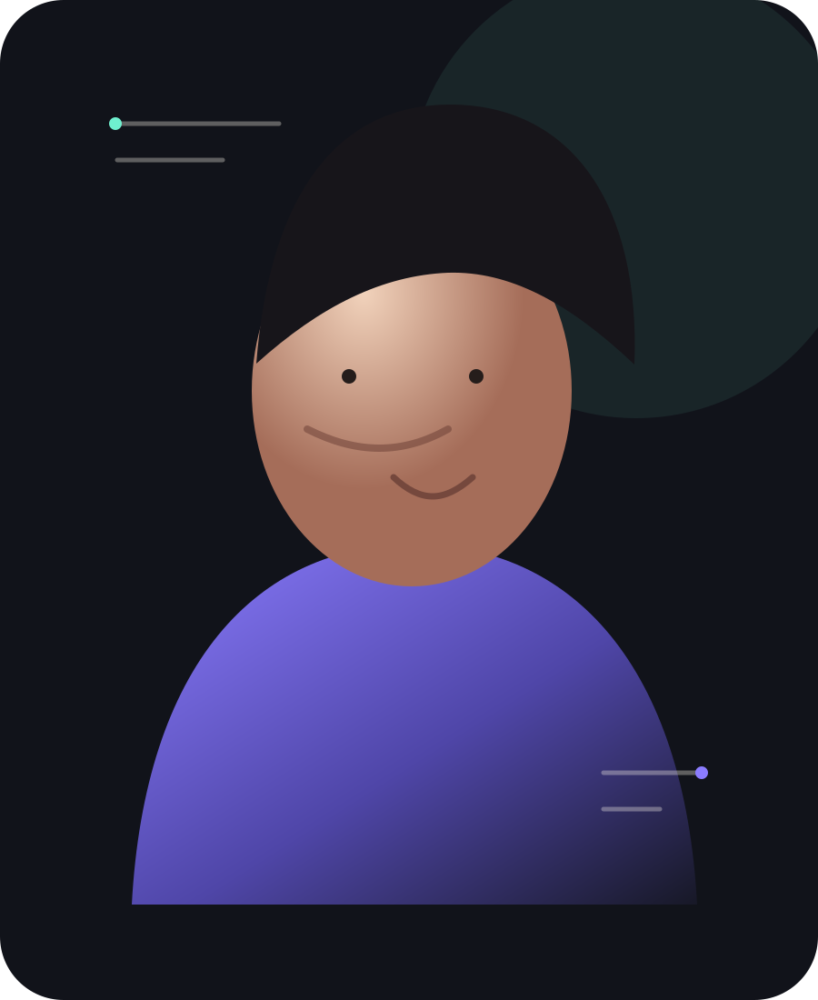
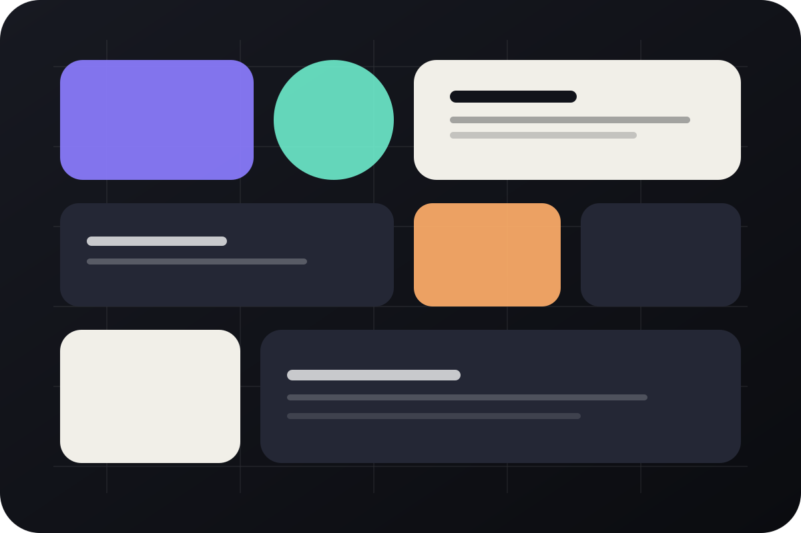
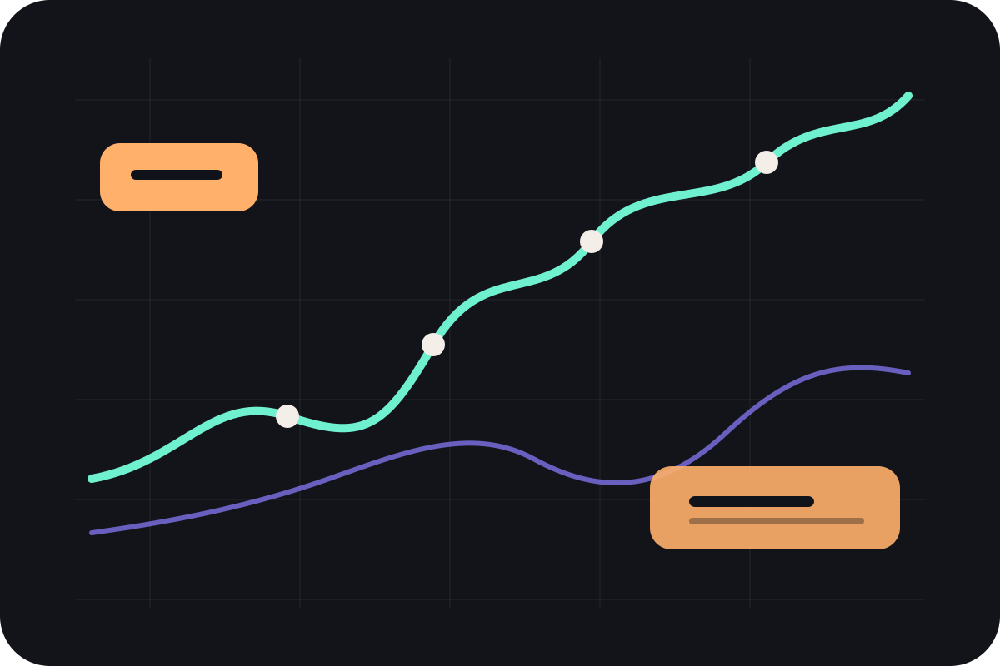
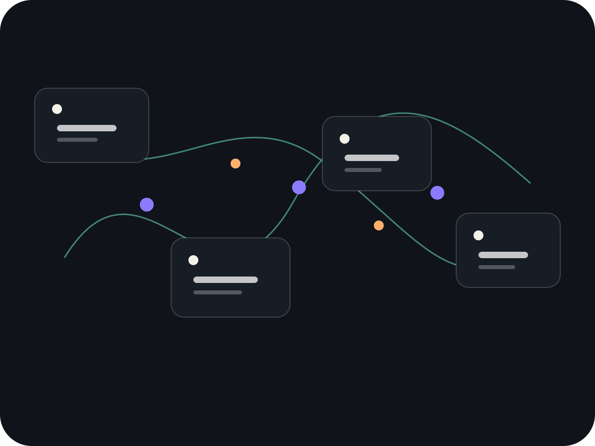
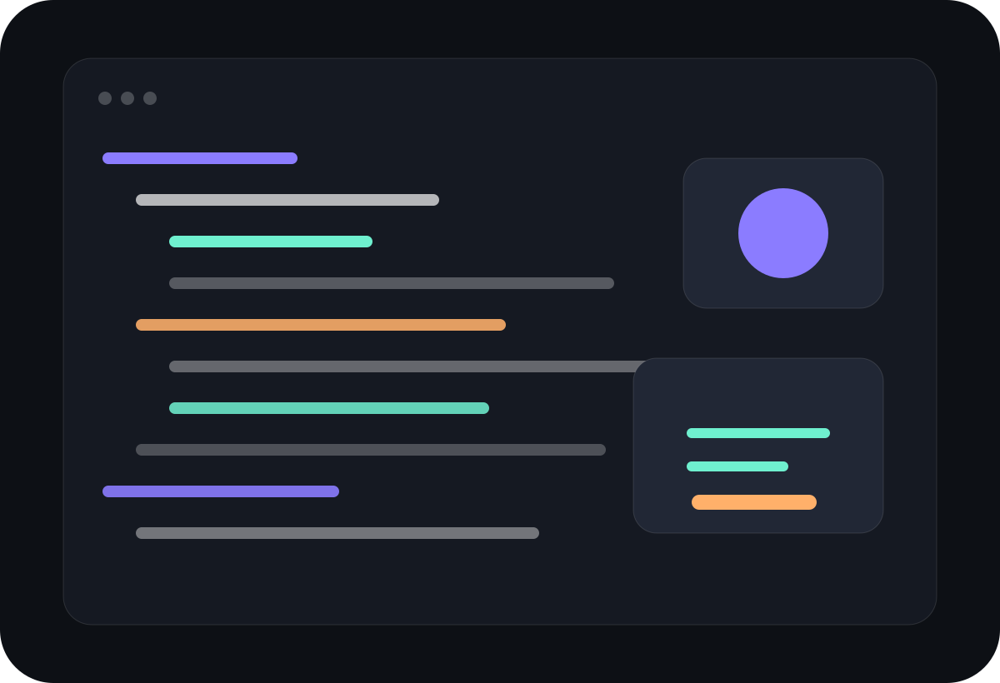

Identity / Senior Product DesignerCareer,
seen first.
The hero behaves like a visual cover: identity, craft and proof are understood through composition before dense biography appears.

Identity / Senior Product DesignerThe hero behaves like a visual cover: identity, craft and proof are understood through composition before dense biography appears.

System scaleShared system adoption

Measured impact
Workflow thinkingAI triage steps

Code-awareProduct and interaction design across B2B, data and AI workflows.
Products and major surfaces brought through delivery.
Less clarification after a shared design QA workflow.
Cross-functional teams supported through systems and product work.
This direction is built for recruiters who scan before they read. The hero uses only original project imagery and a small amount of labeling; details arrive later, after the visual structure has established seniority, range and craft.